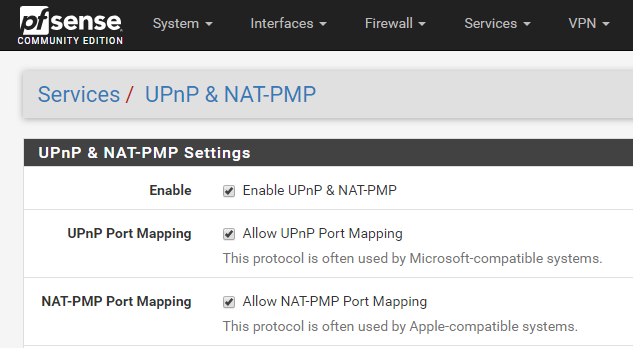
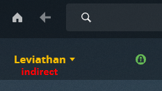
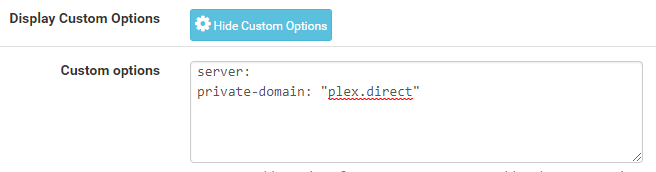
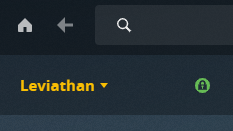

I’ve recently built a custom FreeNAS file server in my house to act as high capacity storage for my personal photos & videos, a Plex Media Server, and an S3 server for offsite backup for my business and family, among a few other minor things. At the same time I also replaced my Ubiquiti EdgeRouter X with a custom pfSense router (primarily for better remote VPN and P2P VPN support).
Enabling Remote Access for Plex
Once I had it all done and configured I noticed that my plex server was reporting as unreachable to the outside world.. Not ideal, if I want to watch a movie from my collection while I’m traveling. It didn’t take long to realize that pfSense had UPnP disabled by default..

In the pfSense WebUI I navigated to Services -> UPnP & NAT-PMP. There I checked Enable UPnP & NAT-PMP, Allow UPnP Port Mapping, & Allow NAT-PMP Port Mapping. I could have done a static port forward (and maybe I still will) but I figured UPnP also might be useful to make sure my XBox and Steam games didn’t have issues either. After saving and applying these changes and having plex recheck remote access it came up green with “Fully accessible outside your network”.
Fixing Indirect Access on the LAN
I thought it was all great then I noticed that when I accessed Plex from my local network it was showing up as indirect, which caused it to transcode everything like it was coming from the internet.

After too much time searching for things like “plex indirect pfsense” and trying solutions for similar problems the closest I got was a forum post indicating it was a DNS Rebinding issue with plex Secure Connections, but I didn’t know how to fix it. I finally stumbled across a link to this plex support article that directly pointed the way on pfSense (which never showed up on my normal searches because it doesn’t have the word “indirect” anywhere). The solution was pretty easy too, I navigated over to Services -> DNS Resolver -> General Settings and scrolled down and clicked the “Show Custom Options” button, which displayed the Custom options entry where I added the following:
server:
private-domain: "plex.direct"

Bingo! Direct & Secure LAN Connection

I wasted a lot of time trying to figure out the solution to this and while I have mostly written up this post to help me remember how I got this working, I hope this helps someone else waste a little less time.
comments powered by Disqus